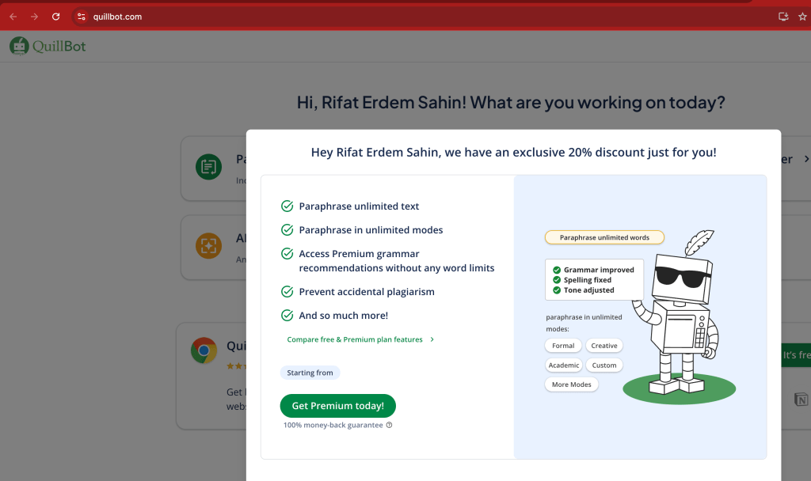
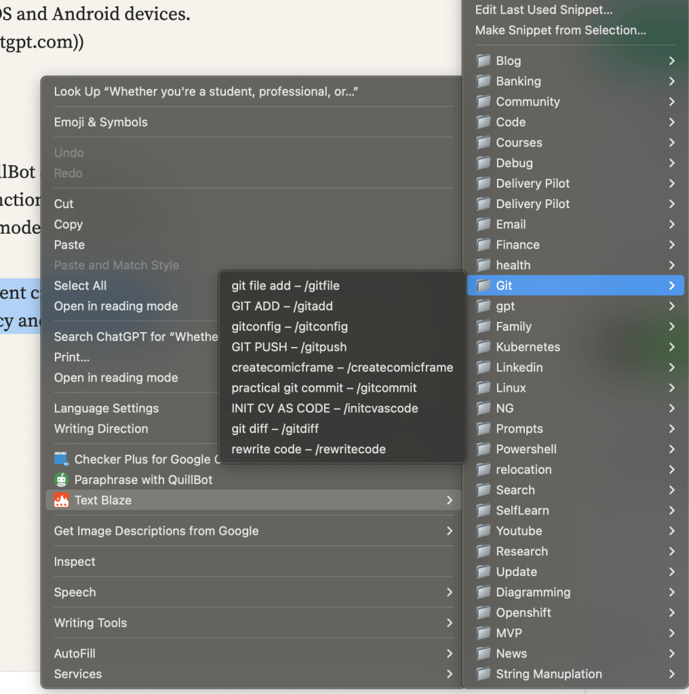
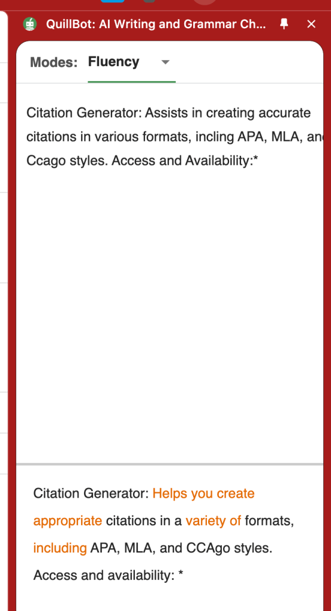

💡 How to Use AI to Complete Sentences on macOS with Your MacBook Pro 🖥️
In today’s fast-paced world, AI can be a game-changer when it comes to boosting productivity and streamlining tasks. If you’re a MacBook Pro user, you can use AI-powered tools to help you complete sentences or even generate full paragraphs, making your writing process faster and more efficient. In this blog post, I’ll guide you through how to activate these AI features on your macOS and provide some useful tips on how to get started. 🚀
🔑 Activating AI Sentence Completion on macOS
First things first, you'll need to activate the necessary settings on your Mac to start using AI-powered features. You can use tools like Apple's built-in Siri or third-party applications that integrate AI models like OpenAI's GPT to complete sentences for you. Here’s what you need to do:
-
Enable Dictation:
On your Mac, go to System Settings > Keyboard > Dictation. Toggle it on and set up the language preferences. Dictation allows you to talk to your Mac, and it will transcribe your speech into text. This is a great starting point for voice-to-text AI. -
Install AI-Powered Apps:
Apps like Grammarly, Quillbot, or even ChatGPT apps can help you auto-complete sentences and suggest enhancements to your writing. You can find these apps on the Mac App Store or access them via their websites. -
Use Text Expansion Tools:
You can also use text expansion tools like TextExpander or aText, which allow you to store commonly used sentence completions or phrases and expand them as needed.
🔄 Integrating AI Models (OpenAI GPT)
For those who want a more advanced, AI-driven approach, integrating GPT models into your workflow can elevate your writing even further.
-
Using API or Tools:
Sign up for an API key from OpenAI or another provider offering GPT models. You can integrate this into Mac apps like Automator to set up shortcuts for sentence completion. -
Using Shortcuts on macOS:
Apple’s Shortcuts app can also help you create workflows that call an AI model to complete sentences when triggered. You can automate text completion, especially for repetitive tasks.
🎯 Practical Use Cases
Here are some ways you can use AI to complete sentences on your MacBook Pro:
-
Emails: Quickly draft professional emails with AI suggestions.
-
Blogging: Generate engaging content, ideas, or sentence completions.
-
Coding: Use AI to help auto-complete lines of code or offer programming suggestions.
-
Social Media: Create captivating posts with the help of AI to increase engagement.
📸 Screenshot Pauses: Let’s Look at Some Visuals
To make this process even easier, here’s a step-by-step visual guide on how you can activate Dictation and use AI apps on macOS. 📸

🌟 Conclusion
AI is an incredibly powerful tool that can make your work on macOS even more efficient. By enabling voice dictation, installing AI-powered apps, and integrating GPT models, you can easily complete sentences, enhance your writing, and save time.
If you have any questions or want to explore more AI tips for MacBook Pro, feel free to reach out!
🔗 Connect with me:
-
💼 LinkedIn: Rifat Erdem Sahin
-
🐦 Twitter: @rifaterdemsahin
-
🎥 YouTube: Rifat Erdem Sahin
-
💻 GitHub: Rifat Erdem Sahin GitHub
Happy writing with AI! 💬✨
QllBot is an AI-powered writing assistant designed to enhance your writing through various tools and features. Fed in 2017, it offers a suite of services to help users improve clarity, fluency, and professionalism in their writing. (ewikipedia.org)
Key Features:
- Paraphrasing Tool: Rewrites sentens and paragraphs tomprove clarity and comprension. (quillbot.com)
-Grammar Checker:*dentifies and corrects grammatical, spelling, and punctuation errors. (quillbot.com)
-
Summarizer: Condenses lengthy articles or documents into cise summaries, highlightinkey points. (quillbot.com)
-
Translat Translates text into over 40anguages, facilitating multilingual communication.
-
Citation Generator: Assists in creating accurate citations in various formats, incling APA, MLA, and Ccago styles. Access and Availability:*
QuillBot is accessible via its website and offers browser extensions for Chrome and Edge, as well as applications for iOS and Android devices. ([quillbot.com]ttps://quillbot.comu_source=chatgpt.com))
Usage:
While many features are available for free, QuillBot also offers a Premium subscription that unlocks ditional functionalities, such as increased input limits and more paraphrasing modes. (quillbot.com)
Whether you're a student, professional, or content creator, QuillBot provides tools to enhance your writing efficiency and effectiveness.
Also use it with textblaze at the same time

On the side

Imported from rifaterdemsahin.com · 2025